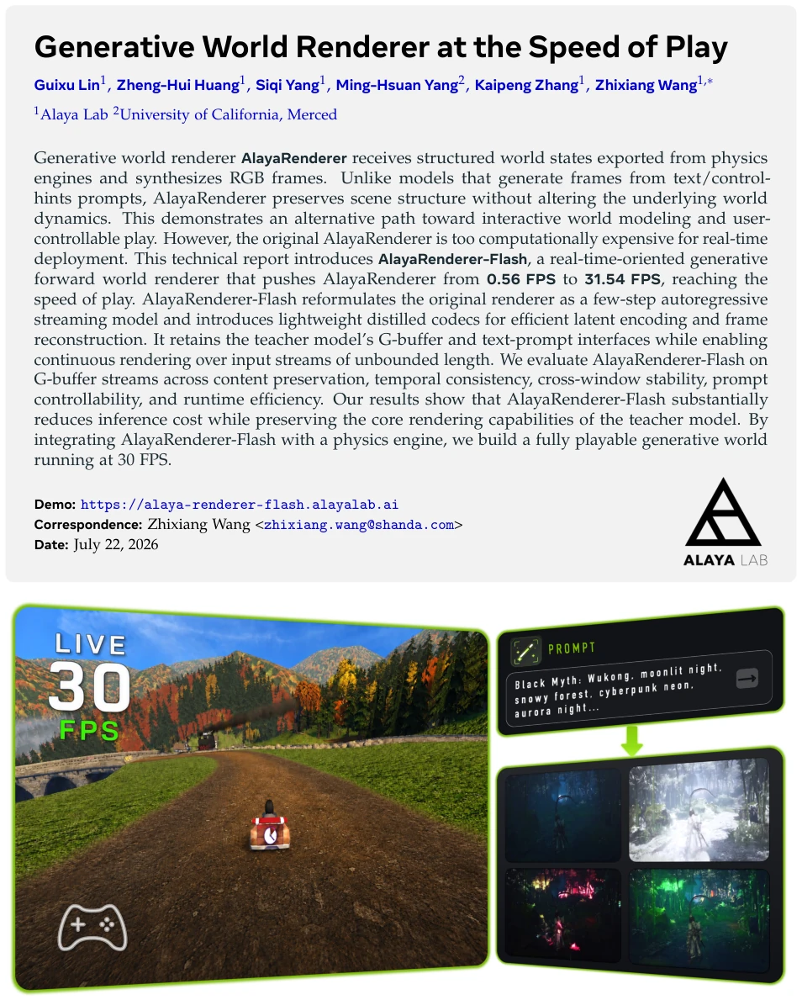
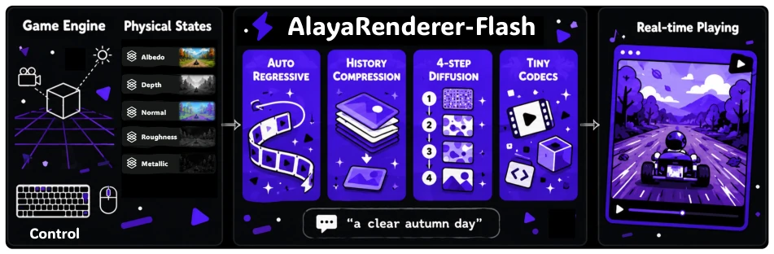
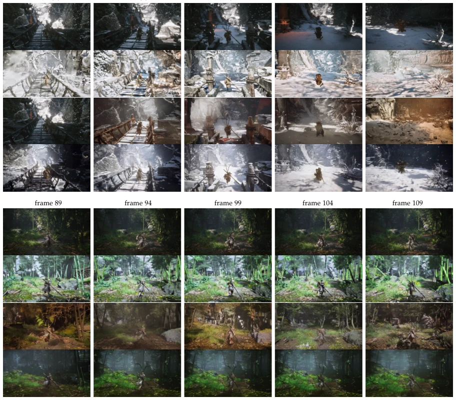
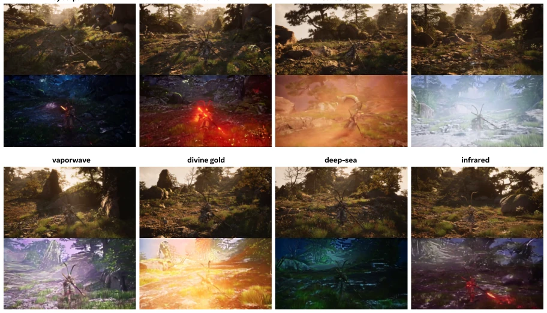

这篇论文给“生成式世界模型”贴上了“游戏速度”的标签，AlayaRenderer-Flash 确实把渲染帧率从 0.56 FPS 拉到了 31.54 FPS，听起来很性感。但本质上，它是个披着 diffusion 外衣的“风格迁移器”，依赖游戏引擎导出的 G-buffer 维持物理逻辑，而非真正从文本生成世界动态。这种“引擎 + 生成器”的范式虽然稳妥，却把生成模型的自由度锁死在物理模拟的笼子里，无法处理引擎未定义的物体交互。蒸馏到 4 步虽然快，但高频细节靠 GAN head 补，难免有“画皮”嫌疑，且对 G-buffer 质量依赖极高。不过，能在单卡 H200 上跑 30 FPS 且支持长序列 prompt 切换，对于交互式仿真确实是个实用的工程突破，只是别指望它能像 Sora 那样无中生有，更多是现有渲染管线的生成式补丁。
This paper labels "Generative World Models" with "Game Speed". AlayaRenderer-Flash indeed pulls rendering frame rate from 0.56 FPS to 31.54 FPS, which sounds very appealing. But essentially, it is a "style transferer" wearing a diffusion guise, relying on G-buffer exported from game engines to maintain physical logic, rather than truly generating world dynamics from text. Although this "Engine + Generator" paradigm is stable, it locks the generative model's freedom in the cage of physical simulation, unable to handle object interactions undefined by the engine. Distilling to 4 steps is fast, but high-frequency details are supplemented by a GAN head, inevitably raising suspicion of superficial appearance, and highly dependent on G-buffer quality. However, being able to run at 30 FPS on a single H200 card and support long sequence prompt switching is indeed a practical engineering breakthrough for interactive simulation, just don't expect it to create something from nothing like Sora, it is more of a generative patch for existing rendering pipelines.
研究动机Motivation
现有的生成式渲染方法在“保结构”和“跑得快”之间难以兼得。纯文本驱动的生成模型往往破坏场景几何与物理逻辑，无法用于游戏交互。基于 G-buffer 的方法虽然保留了物理状态，但计算成本高昂。AlayaRenderer (Huang et al., 2026b) 虽能高质量渲染，但 50 步去噪导致仅 0.56 FPS，无法实时。RGB↔X (Zeng et al., 2024) 虽快但缺乏时序建模，画面闪烁。FrameDiffuser (Beisswenger et al., 2025) 引入自回归但推理仅 0.31 FPS，且不支持 Prompt 切换。Diffusion Renderer (Liang et al., 2025) 采用双向生成，无法支持无界流式推理。因此，亟需一种既能保持 G-buffer 结构约束，又能达到实时帧率（30+ FPS）的生成式渲染方案，以支持交互式世界建模。
Existing generative rendering methods struggle to achieve both "structure preservation" and "fast running". Pure text-driven generative models often destroy scene geometry and physical logic, making them unusable for game interaction. Methods based on G-buffer preserve physical states but have high computational costs. AlayaRenderer (Huang et al., 2026b) can render with high quality, but 50-step denoising results in only 0.56 FPS, unable to run in real-time. RGB↔X (Zeng et al., 2024) is fast but lacks temporal modeling, causing flickering. FrameDiffuser (Beisswenger et al., 2025) introduces autoregression but inference is only 0.31 FPS, and does not support Prompt switching. Diffusion Renderer (Liang et al., 2025) adopts bidirectional generation, unable to support unbounded streaming inference. Therefore, there is an urgent need for a generative rendering scheme that can maintain G-buffer structural constraints while achieving real-time frame rates (30+ FPS), to support interactive world modeling.

Figure 1 AlayaRenderer-Flash restyling a live SuperTuxKart session in our interactive web demo. The game engine continuously exports synchronized G-buffers to AlayaRenderer-Flash, which generates stylized RGB frames at playback rate. Players can modify the visual style of the rendered game through arbitrary text prompts while the underlying gameplay logic remains unchanged.
The overall process adopts a streaming architecture, where the game engine exports G-buffer streams in real-time, which are then processed by AlayaRenderer-Flash to generate RGB frames. Core innovations are divided into three parts: First, the original bidirectional fixed window is reconstructed into autoregressive streaming (Autoregressive Streaming), chunked by latent chunks, adopting a three-level history compression mechanism to retain temporal dependencies, and introducing a text sink to ensure long-sequence Prompt control consistency. Second, implement four-step distillation (Few-Step Distillation), integrating CFG into weights via Guidance Distillation, then reducing steps progressively (Progressive Step Reduction) from 50 steps to 4 steps, finally using Mean Flow Distillation (MFD) to optimize distribution matching, supplemented by a lightweight GAN head to recover high-frequency textures. Finally, replace the original Wan VAE with distilled Tiny Codecs, including a shared G-buffer encoder and a lightweight temporal decoder, significantly reducing encoding/decoding overhead. All components maintain state persistence, support unbounded input streams, ultimately achieving real-time rendering at 30 FPS on a single card.

Figure 2 System overview of AlayaRenderer-Flash. During gameplay, the player independently controls game interaction through standard game inputs and visual appearance through text prompts. The game engine continuously updates the world state and exports synchronized G-buffers, which, together with the text prompt, are processed by AlayaRenderer- Flash to generate stylized RGB frames in real time. The rendered frames are immediately displayed to the player, forming a closed-loop interactive rendering system.
Experiments are based on a dataset captured from the "Black Myth: Wukong" engine (1280x720, 30 FPS), containing 1352 training clips. Comparison baselines include RGB↔X (Zeng et al., 2024), FrameDiffuser (Beisswenger et al., 2025), and Diffusion Renderer (Liang et al., 2025). Evaluation metrics cover content preservation (SCLIP-I), temporal stability (tLPIPSwarp), boundary consistency (Boundary MSE/SSIM), and Prompt control power (MCLIP). Ablation experiments show that autoregressive reconstruction improves content similarity, 4-step distillation significantly boosts throughput, and lightweight Codec pushes frame rate to 31.54 FPS while reducing VRAM to 16.2 GB. In the end-to-end deployment on SuperTuxKart, the system stably maintains 30 FPS, supporting long-sequence Prompt switching without ghosting. Compared to FrameDiffuser's 0.31 FPS and RGB↔X's temporal flickering, this method achieves true real-time interaction while maintaining structural consistency, verifying the feasibility of streaming generative rendering in simulation environments.

Figure 3 Qualitative comparison with external baselines on 5-second clips. Reference denotes the original RGB frames rendered by the game engine during data collection. Since prompt-conditioned rendering admits multiple valid outputs, these frames serve as visual references rather than ground-truth targets.

Figure 4 Prompt-controlled visual style transitions during a single long streaming rollout. Reference denotes the original RGB frames rendered by the game engine during data collection and is shown for visual comparison.